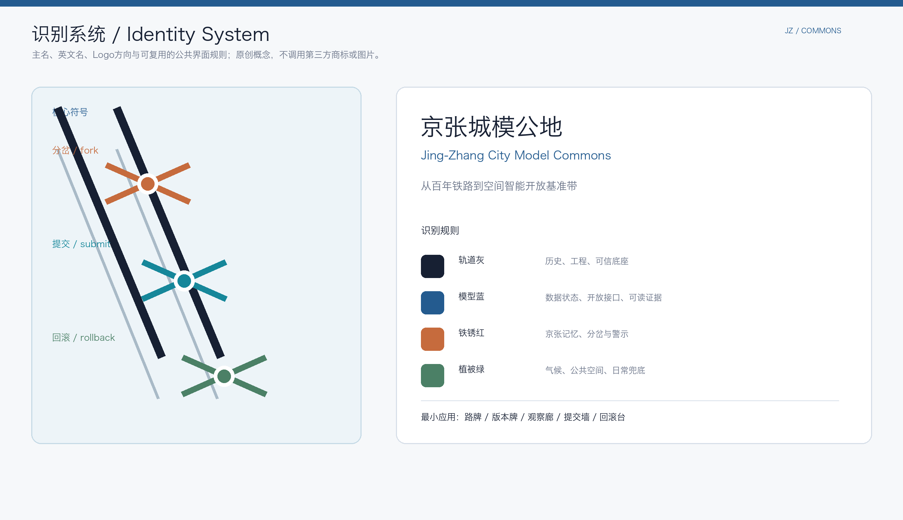
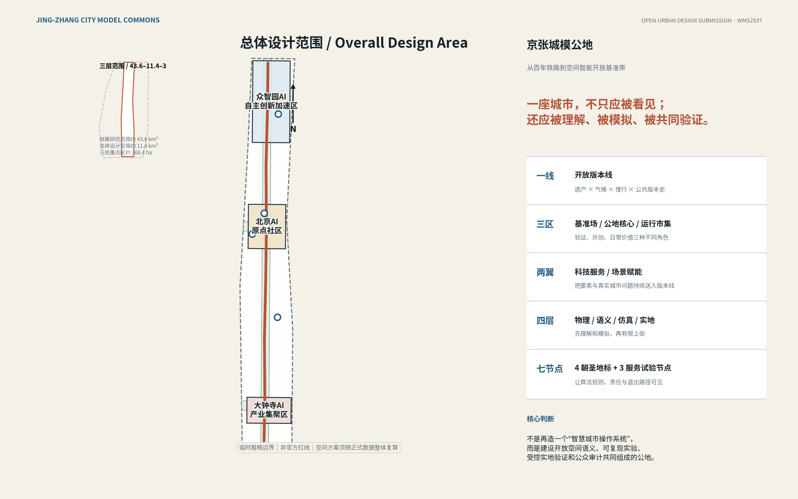
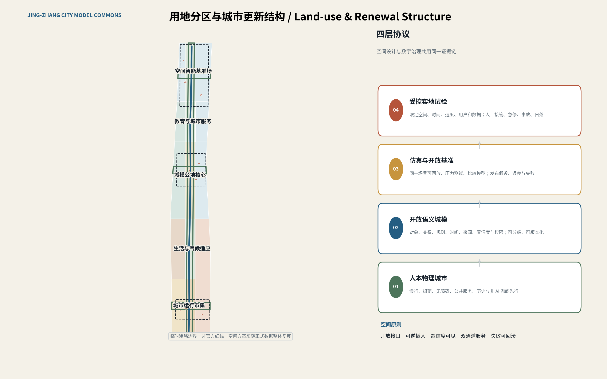
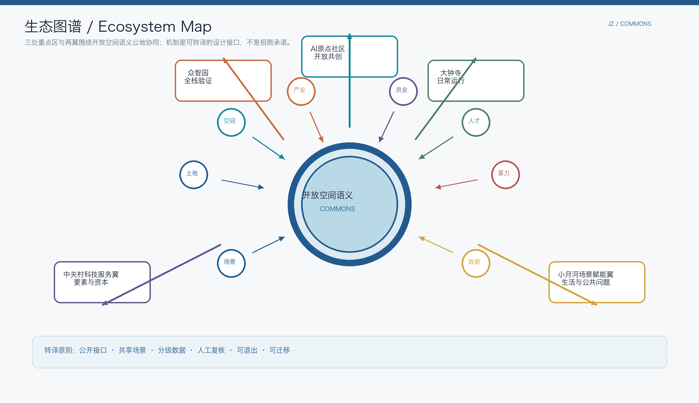
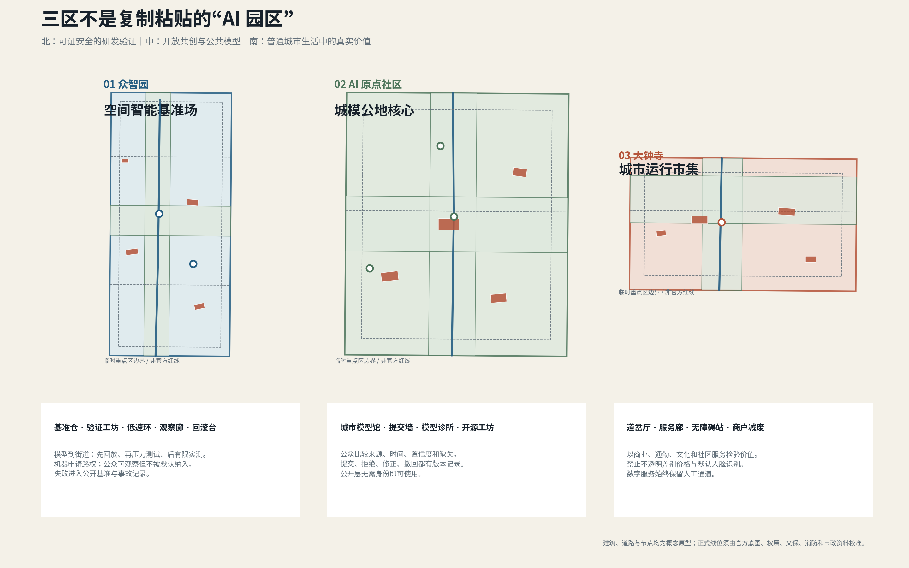
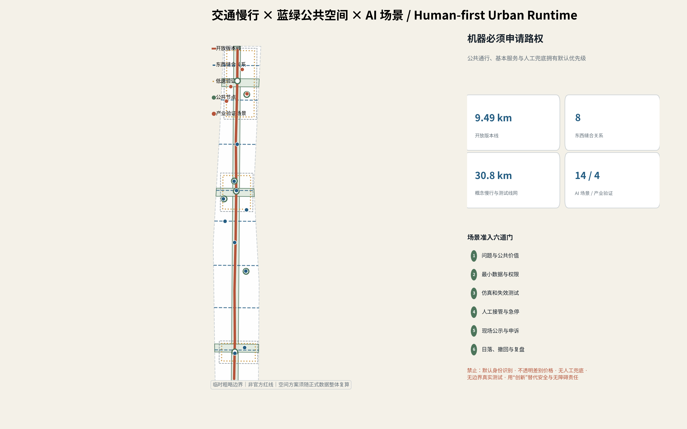
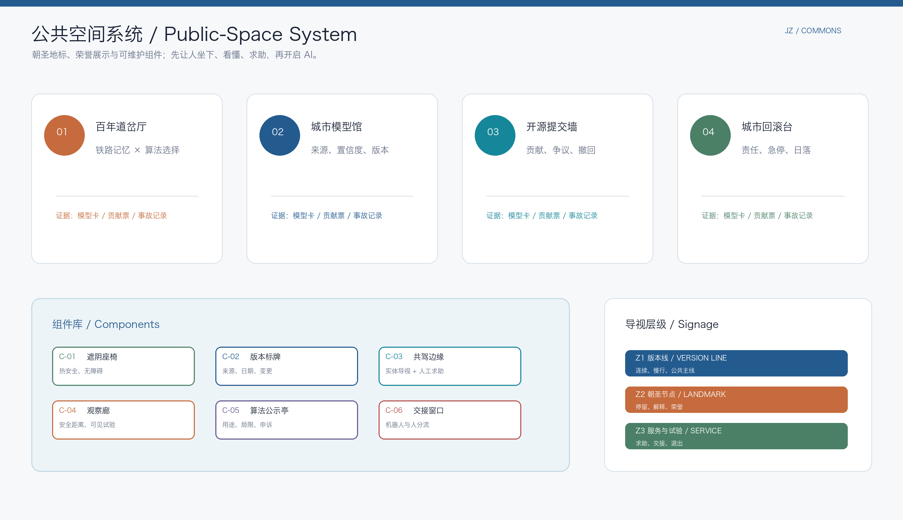
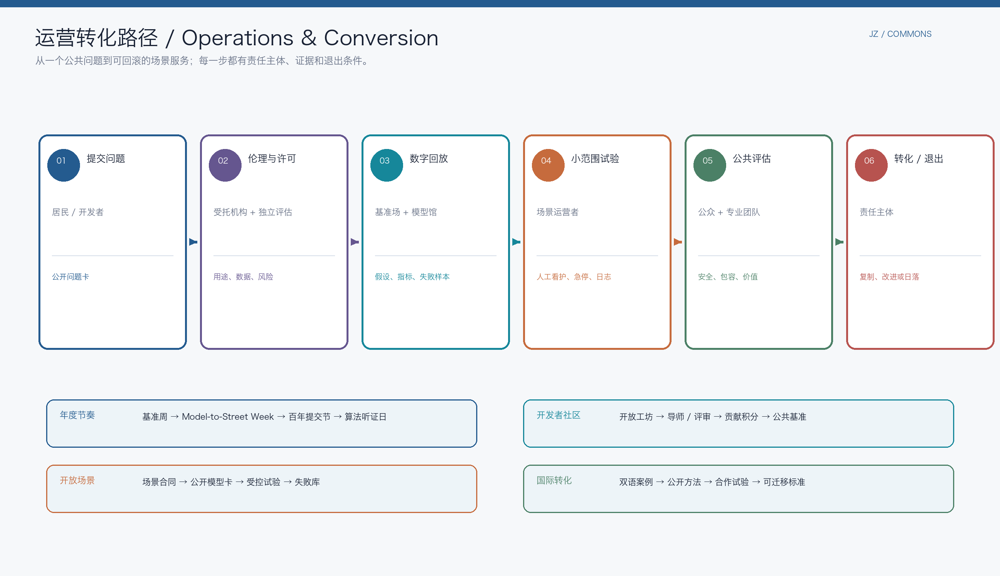
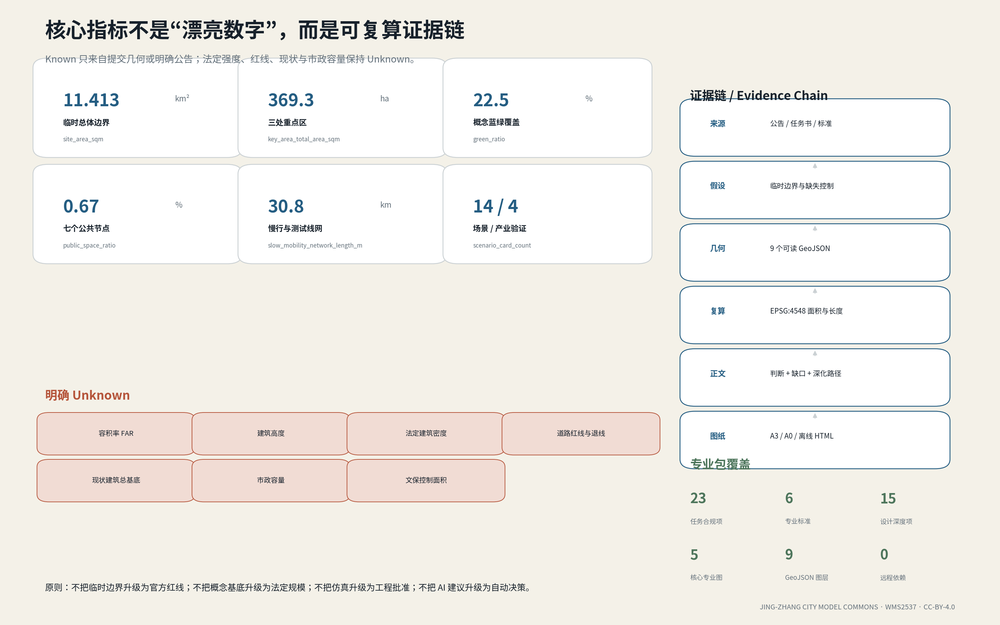

京张城模公地：从百年铁路到空间智能开放基准带
以百年京张铁路遗产为公共版本线，建设由开放三维语义城模、可复现实验、受控实地验证和公众审计共同组成的空间智能公地。三处重点区分别承担基准验证、开源共创与日常服务，把AI从城市表面的设备标签转化为可理解、可模拟、可问责、可回滚的公共能力。
京张城模公地
**Jing-Zhang City Model Commons** **从百年铁路到空间智能开放基准带**
> 一座城市，不只应被看见；还应被理解、被模拟、被共同验证。
百年前，京张铁路把工程知识写进山河；中关村又把知识转化为开放协作与产业创新。面向 AI 时代，本方案提出第三次基础设施转向：把城市的空间知识——道路、建筑、绿地、公共服务、风险、规则、版本与不确定性——建设为一套公共可用、专业可复算、社会可监督的“城模公地”。AI 不再只是摄像头、屏幕、机器人和园区口号，而成为一条从**感知—语义—仿真—验证—运营—问责**闭环中受约束的城市能力。
方案形成“**一线、三区、两翼、四层、七节点**”：以京张遗址公园及其周边公共空间为“开放版本线”；众智园、AI 原点社区、大钟寺分别承担空间智能基准验证、开源共创和日常服务；中关村科技服务翼与小月河场景赋能翼提供要素和真实问题；物理公共空间、开放语义城模、仿真基准、受控实地试验构成四层协议；四个朝圣地标与三个服务/试验节点让治理规则可被普通人看见。
本方案的差异化不在于承诺一座全自动城市，而在于回答一个更基础的问题：**未来城市如何安全地让人、模型、机器人和专业人员共享同一空间事实？**
任务书定位、品牌与总体协同回路
本方案把任务书的必答词直接转译为空间和运营接口，而不是用自定义概念替代它们。[source:DATA-SRC-AGENT-TASKBOOK-20260518]
| 任务书原词 | 京张城模公地的回应 | 可定位交付 | | --- | --- | --- | | **三大定位**：百年京张文化带、都市 AI 生活体验带、AI 融合创新带 | 以历史版本线、日常双通道服务、模型到街道验证链组成同一条公共回路 | 总体图、文化叙事、场景卡、验证场 | | **五大功能**：AI 全栈自主创新体系、世界级 AI 创新生态、AI+ 场景赋能新范式、智能化 AI 活力城市、AI 治理全球话语权 | 众智园负责基准与安全；原点社区负责开放生态；小月河翼和大钟寺负责生活场景；公开模型卡、审计和回滚形成治理输出 | [data:geometry/key_areas.geojson#KEY-001] [metric:scenario_card_count] [metric:industry_validation_scenario_count] | | **三区两翼** | 三处重点区通过开放版本线连接；中关村科技服务翼输入人才、标准、资本与出海服务；小月河场景赋能翼输入居民、生态、照护与公共问题 | [data:geometry/key_areas.geojson#KEY-001] [data:geometry/key_areas.geojson#KEY-002] [data:geometry/key_areas.geojson#KEY-003] |
主名称为“京张城模公地”，英文为 **Jing-Zhang City Model Commons**。Logo 方向以两条铁路轨迹和三个可回滚的分岔节点构成：橙色代表历史与选择，青色代表公开提交，绿色代表回滚与日常兜底；轨道灰、模型蓝、铁锈红、植被绿构成最小识别系统。它是原创方向稿，不使用第三方商标、字体、人物或图片；正式采用前仍需完成商标、字体和可读性审查。[assumption:A-BRAND-001]

设计依据与资料清单
本方案依据官方资格预审公告、面向智能体的开源任务书、仓库 site package、正式专业标准及公开国际案例编制。[source:DATA-SRC-OFFICIAL-ANNOUNCEMENT-20260509] [source:DATA-SRC-AGENT-TASKBOOK-20260518] [source:PLANNING-LIMITS] 任务依据支持三层尺度、三区两翼、六项开放征集任务、场景与运营要求；专业依据支持公共空间、城市风貌、控规边界及用地分类术语。[standard:PROJECT-OFFICIAL-ANNOUNCEMENT] [standard:PROJECT-AGENT-OPEN-CALL-TASKBOOK] [standard:MOHURD-URBAN-DESIGN-MEASURES] [standard:MOHURD-CONTROL-DETAILED-PLANNING] [standard:MNR-LAND-USE-CLASSIFICATION-GUIDE]
**资料可信度分三级管理。** 第一层是官方公告、清权任务书和正式标准，可用于定义任务、公开事实与专业方法；第二层是仓库维护者明确标注的临时边界，只能用于生成、可视化和自检；第三层是尚缺的官方 polygon、控规、道路红线、现状建筑、权属、文保、消防和市政容量，必须作为数据缺口，不由 AI 猜测补齐。[source:DATA-SRC-PROVISIONAL-BOUNDARIES-20260605] [assumption:A-BOUNDARY-001] [assumption:A-CONTROLS-001]
提交采用 EPSG:4326 交换 GeoJSON，并在 EPSG:4548 下复算面积和长度。当前临时总体边界复算约 **11.413 km²**，与公告约 11.4 km² 的差异约 0.11%；该吻合只说明临时几何可支持概念工作，不能升级为官方红线或审定面积。[data:geometry/site_boundary.geojson#SITE-001] [metric:site_area_sqm] [metric:site_area_deviation_ratio]
全域及该局部官方资料证据单元之外的容积率、建筑高度、法定建筑密度、道路退线、现状建筑总基底、市政容量和文保控制面积均明确保持 unknown。大钟寺 HD00-1603-01/03A 另有有范围限定的官方控制证据，但不改变全域临时几何，也不构成对本方案的批准。建筑、道路、用地和分期图层表达“可供专业团队深化的参考方案”，不构成批准、拆除、新建、工程线位、投资或实施承诺。[metric:floor_area_ratio] [metric:building_height_m] [metric:official_building_density] [metric:road_redline_setback_m] [metric:existing_building_footprint_sqm] [depth:existing_conditions_diagnosis] [depth:risk_missing_data]
海淀证据基线与区域协同：公开事实 → 设计响应 → 验证门
本节只登记可回溯的公开信号，不把统计数写成远期预测；区域协同是接口建议，不是合作、投资、互认或政府背书。完整机器副本见 [data:visual/assets/site_evidence_baseline.json#OBS-BJ-POP-2024]。
| 公开信号（截至 2026-08-09） | 对本方案的设计响应 | 下一步证据门 | | --- | --- | --- | | 北京 2024 年常住人口约 2183.2 万，官方统计同时提供轨道交通与区域发展背景 [source:DATA-SRC-BEIJING-2024-STATISTICS] | 不假定人口增长或未来客流；先以工作日/周末、时段、人群和人时验证服务可靠性与存量复用 | 取得官方站点、步行、服务覆盖和分时观察后再定规模与分期 | | 海淀 2024 年统计公报呈现知识与服务密集型经济，第三产业占地区生产总值 92.49%，并有高技术创新基础 [source:DATA-SRC-HAIDIAN-2024-STATISTICS] | 把“研究—验证—公共解释—日常采用”做成空间链，不建设脱离生活的 AI 专用园区 | 补现状机构、建筑容量、权属、使用需求与运营责任调查 | | 北京老龄事业公开报告提供老龄社会背景 [source:DATA-SRC-BEIJING-AGEING-2024] | 遮阴、座椅、实体导视、人工求助和无障碍连续性先于可选 AI；老年、残障、照护者和拒绝采集者都保留非数字路径 | 由知情同意的全龄用户参与热安全/无障碍走查，公开断点、求助和负面结果 | | 官方公开介绍将京张铁路遗址公园描述为约 9 km 的城市更新与绿地系统，并涉及桥下空间与 13 号线语境 [source:DATA-SRC-JINGZHANG-PARK-20230630] | 把遗产绿脊作为“开放版本线”，做站点—公园—服务节点的接口；不虚构站点、红线或桥下工程线位 | 以官方站点、道路、文保、权属、消防和应急数据校核后再落物理线位 | | 海淀政府工作报告将 AI、数据、安全与创新带放入当前发展语境 [source:DATA-SRC-HAIDIAN-2026-WORK-REPORT] | 城模公地承担研究到街道的翻译、受控验证和公共问责，不把政策语境写成已批准项目 | 每个试点先锁定责任主体、数据许可、安全审查、公共服务基线和退出决定 |
大钟寺局部官方资料证据：局部 guardrail，不是全域红线
北京公共资源交易页面及其公开附件为大钟寺重点区补上了一块可复核的局部官方资料证据：HD00-1603-01 与 HD00-1603-03A 合计 **39,522.111 m²**，并有规划用地测量报告、供地“多规合一”审核、局部市政交通方案和水影响审查。[source:DATA-SRC-DAZHONGSI-TRANSACTION-20251231] [source:DATA-SRC-DAZHONGSI-SURVEY-20250806] [source:DATA-SRC-DAZHONGSI-SUPPLY-REVIEW-20251218] [source:DATA-SRC-DAZHONGSI-MUNICIPAL-TRAFFIC-2025] [source:DATA-SRC-DAZHONGSI-WATER-20250819] [data:visual/assets/site_evidence_baseline.json#OBS-DAZHONGSI-BLUE-JING-LIJIA-2025] [metric:dazhongsi_local_unit_area_sqm]
| 局部已核实事实 | 在本方案中的用法 | 不能外推的结论 | | --- | --- | --- | | HD00-1603-01 控制高度 **60 m**、容积率 **2.45**、地上建筑规模 96,656.065 m²、绿地率下限 **25%** [metric:dazhongsi_local_b4_height_control_m] [metric:dazhongsi_local_b4_far_control] [metric:dazhongsi_local_b4_green_ratio_min] | 作为大钟寺服务廊、站点界面和可逆更新的局部体量/绿地 guardrail；先做首层开放、无障碍和可维护接口 | 不是 72 ha 重点区或 11.4 km² 总体设计范围的 FAR、高度或法定绿地率 | | 北三环建筑控制线退让不少于 **30 m** [source:DATA-SRC-DAZHONGSI-SUPPLY-REVIEW-20251218] [metric:dazhongsi_north_third_ring_setback_m] | 把退让带作为安全、树荫、步行连续和站点到公共空间的设计检查项，不把临时线位画成红线 | 不替代全域道路红线、消防、出入口和工程审批 | | 大钟寺站约 **300 m** 一体化管控语境；局部交通方案含 3,190 人次/小时早高峰模型和约 0.14 ha 非机动车停车场 [source:DATA-SRC-DAZHONGSI-MUNICIPAL-TRAFFIC-2025] [metric:dazhongsi_station_integration_radius_m] | 将“城市运行市集”首发验证限定为站点—服务廊—公共空间的可达性、人工求助和运营成本测试 | 不把报审稿模型当作全带客流基线、已批停车或工程容量 | | 规划水平年 2027、综合径流系数上限 **0.34**，雨水入土城沟、污水入清河再生水厂 [source:DATA-SRC-DAZHONGSI-WATER-20250819] [metric:dazhongsi_runoff_coefficient_max] | 把水敏更新、维护责任和极端天气回滚写入大钟寺试点的开放门槛与成本回收记录 | 不构成全带水系统模型或海绵城市审批结论 |
测量报告含桩点坐标，但可见文本没有给出完整 GIS CRS、轴顺序和单位元数据；因此本包**不把该局部坐标写入 GeoJSON，也不替换 KEY-003 临时 polygon**。先确认测绘单位的坐标与授权，再进行边界重建和现场复核。[assumption:A-BOUNDARY-001] [assumption:A-CONTROLS-001] [depth:existing_conditions_diagnosis]
**五个区域接口。** 以“问题—能力—凭证”而不是机构名单建立协同；所有方向均需对方另行同意，交换去标识化或公开材料，并把权利/IP、安全责任、维护记录和拒绝/撤回/不互认路径写入接口合同。[source:DATA-SRC-HAIDIAN-15FYP-20251208] [assumption:A-REGIONAL-SYNERGY-001] [data:visual/assets/site_evidence_baseline.json#REG-NORTH-LATITUDE]
| 协同对象（方向性建议） | 京张提出的输入 | 可交换的最小输出 | 接收与退出闸门 | | --- | --- | --- | --- | | 北纬社区 / AI 原点社区 | 居民问题、无障碍断点、非数字服务体验 | 去标识化问题卡、人工服务缺口、关闭原因 | 社区同意、版权/隐私复核、责任与安全范围、维护记录责任和撤回路径明确；参与不等于同意部署 | | 未来科学城 | 端侧模型、具身设备与工程验证问题 | 模型卡、设备护照、失败清单、复测条件 | 自愿测试；测试责任、知识产权、安全范围、维护/召回责任和复测/退出路径明确；不自动互认 | | 怀柔科学城 | 测量、校准与科学研究方法问题 | 校准说明、不确定性说明、独立复核问题 | 许可/同意、专业安全责任、权利/IP、维护交接和撤回路径确认；不假定设施或数据可用 | | 北京经开区 | 工程化、制造、供应链和维护问题 | 互操作证据、维护要求、停产/召回条件 | 企业自愿、产品安全/消费者权益、维护/召回责任和退出路径复核；不承诺采购 | | 京津冀 | 跨城共性问题与规则复用方向 | 去地点化 schema、负面结果、版本差异、维护交接 | 各地同意并依法复核责任、安全、权利/IP、维护交接和退出/不互认路径；不复制坐标、个人数据或审批结论 |
该区域回路的价值不是签约数量，而是降低重复验证和知识转译成本；在没有运行基线前，不填协同绩效值，不把方向性接口写成既有合作。[metric:regional_interface_count]
三层范围工作框架

三层尺度不应被压成同一精度的一张“总平面”。约 **43.61 km²** 的统筹研究范围回答海淀高校、研发、资本、场景、公共服务与国际网络怎样形成空间智能生态；约 **11.41 km²** 的总体设计范围回答公共空间、用地、慢行、气候韧性、更新与新型基础设施怎样连续；三处重点区临时几何合计约 **369.3 ha**，用于提出可操作的空间原型、用户界面、运营责任和试验边界。[data:geometry/constraints.geojson#RESEARCH-001] [data:geometry/key_areas.geojson#KEY-001] [data:geometry/key_areas.geojson#KEY-002] [data:geometry/key_areas.geojson#KEY-003] [metric:coordinated_research_area_sqm] [metric:key_area_total_area_sqm]
**一条开放版本线。** 京张铁路最重要的不是被包装成怀旧背景，而是“可校准、可复核、能穿越代际”的工程精神。沿遗产—气候绿脊布置版本标记、数据说明、模型观察、无障碍服务和回滚界面，使城市每次试验都留下“为什么改、谁批准、影响谁、如何撤回”的公共记录。
**三区。** 北部众智园是“空间智能基准场”，把算法、具身智能、仿真和城市运行问题转化为可复现基准；中部 AI 原点社区是“城模公地核心”，将高校、开发者、居民和城市专业人员放在同一公开模型界面；南部大钟寺是“城市运行市集”，用普通商业、通勤、社区服务和文化消费检验 AI 是否真的改善日常生活。
**两翼。** 中关村科技服务翼提供 IP、资本、标准、法务、人才和企业出海服务；小月河场景赋能翼提供生活、生态、运动、照护和公共治理问题。两翼不是两个封闭园区，而是向开放版本线持续提交问题、数据授权、试验需求和评估结果的“输入端”。
**四层协议。** 物理层保证人本空间与非 AI 兜底；语义层把空间对象、关系、规则和置信度结构化；仿真层先在数字环境中复现和压力测试；实地层只允许通过治理门槛的场景在限定范围运行。四层之间通过版本、证据和责任链连接，而不是由一个“超级平台”垄断。[metric:spatial_model_protocol_layer_count] [depth:three_level_scope_framework]
统筹研究范围产业与未来城市研究

1. 产业判断：空间智能需要一条“从模型到街道”的公共验证链
当前 AI 产业的关键瓶颈之一，是数字模型与复杂真实空间之间缺少稳定的中间层：二维识别可以指出“这是一台冰箱”，但城市运行需要同时知道它在哪里、与谁相邻、能否通行、受什么规则约束、发生风险时如何模拟。京张创新带可把海淀的模型、机器人、软件、城市治理和高校优势组织成一条完整链条：**开放空间数据—语义标注—仿真基准—安全评测—受控部署—运营反馈—标准输出**。
这使产业目标从“招商多少 AI 公司”转向三个可验证成果：第一，是否形成跨模型、跨设备、跨年份可复用的空间语义与基准；第二，企业能否用较低成本证明产品在真实城区的安全性、可达性和公共价值；第三，失败试验是否也能沉淀为公开知识，而不是被宣传系统删除。众智园负责硬核验证，原点社区负责开放协作，大钟寺负责真实日常价值，两翼负责要素与问题输入。[source:DATA-SRC-AGENT-TASKBOOK-20260518] [depth:overall_spatial_structure]
2. 七个全球案例：借机制，不复制包装
| 案例 | 可转化机制 | 京张转译 | 明确不照搬 | | --- | --- | --- | --- | | 新加坡 Punggol Digital District | 开放数字平台、API、数字孪生预验证、产学研邻近 | 建立分级开放城模与“先仿真、后上街”的试验链 [source:CASE-PUNGGOL] | 不形成单一供应商锁定或全域身份化便利 | | 首尔 S-Map Open Lab | 城市三维数据、开放实验室、风环境模拟和研究回写 | 把城模从展示资产变为可复现实验基础设施 [source:CASE-SEOUL-SMAP] | 不把三维模型等同于真实世界的完整真相 | | 赫尔辛基 Kalasatama | 小尺度敏捷试点、居民共创、生活质量导向 | 以社区模型诊所和短周期试验先证明公共价值 [source:CASE-KALASATAMA] | 不把居民当被动传感器或测试样本 | | Toyota Woven City | 有边界的真实测试场、发明者与使用者共同验证 | 众智园设置物理隔离、急停、观察廊和责任登记 [source:CASE-WOVEN-CITY] | 不把整条城市带封闭成企业园区 | | 伦敦 SHIFT | 真实城区测试、跨机构合作与包容性创新 | 建立场景准入委员会和公共绩效评价 [source:CASE-SHIFT-LONDON] | 不以“创新豁免”绕过安全和无障碍责任 | | Barcelona 22@ | 产业、居住、公共空间和遗产更新并行 | AI 功能嵌入混合街区，不建纯办公科技岛 [source:CASE-BARCELONA-22AT] | 不用创新名义推动无证据的大拆大建 | | Toronto Quayside | 数字治理争议、独立审查和公共利益讨论 | 把最小采集、可退出、公开审计和日落条款写进空间设计 [source:CASE-QUAYSIDE] | 不让效率叙事替代民主授权和公共问责 |
AI 创新生态图谱与产业—空间映射
七个案例都只提供机制参考，不构成企业、投资或政策承诺。转译后的生态图谱把任务书要求的土地、空间、产业、资金、人才、算力、数据和场景八类机制接到同一个可公开、可分级、可退出的空间语义公地；每类机制都有一个空间承载者和一个可审计的输出。[source:DATA-SRC-AGENT-TASKBOOK-20260518] [metric:ecosystem_case_count]

| 机制 | 空间承载 | 公开输出 | 不作出的承诺 | | --- | --- | --- | --- | | 土地 / 空间 | 三层范围、版本线、重点区节点 | 概念接口、可迁移组件、空间需求清单 | 不给出地块审批、红线或权属结论 | | 产业 / 资金 | 众智园验证链、中关村科技服务翼 | 测试合同、方法、风险与退出条件 | 不编造企业名单、投资额或财政安排 | | 人才 / 算力 | 原点社区、开放工坊、基准仓 | 贡献记录、模型卡、公开基准 | 不把人才画像用于不透明筛选 | | 数据 / 场景 | 小月河场景赋能翼、大钟寺日常市集 | 分级数据目录、失败库、场景评估 | 不把内部数据或个人隐私放入公共层 |
3. 未来城市形态：协议比造型更重要
“AI 原生”不等于更多屏幕或奇异曲面建筑。本方案把未来城市形态定义为五条可操作规则：**开放接口而非封闭系统；可逆插入而非一次性巨构；模型置信度可见而非假装全知；公共服务双通道而非 AI 强制入口；失败可回滚而非技术沉没成本。** 空间上表现为连续绿脊、开放首层、共享工坊、观察廊、低速测试环和小型可替换设施；制度上表现为模型卡、版本记录、算法公示、人工接管、申诉与退出。
geometry/land_use.geojson 以同一临时边界在 EPSG:4548 下无缝切分为十五个概念图斑，构成南部日常服务—中部开放学习—北部研发验证的梯度；这只是功能关系和专业深化接口，不是控规调整结论。[data:geometry/land_use.geojson#LU-001] [data:geometry/land_use.geojson#LU-008] [data:geometry/land_use.geojson#LU-014] [metric:land_use_gap_area_sqm] [metric:land_use_overlap_area_sqm] [depth:land_use_layout]
总体设计范围城市更新与控规深度城市设计
总体结构为“**一线、三段、八缝合、四协议、七节点**”。一线是约 **9.49 km** 的开放版本线；三段分别面向日常服务、开放共创和研发验证；八处东西缝合只表达应恢复的步行联系；四协议把空间设计和数字治理连接；七节点把抽象规则变成可使用的公共场所。[data:geometry/roads.geojson#ROAD-001] [metric:open_version_line_length_m] [metric:east_west_stitch_count]
用地与功能
总体范围被组织为三类横向角色和五个纵向功能带。中部窄带不是普通“科技景观轴”，而是公园、历史叙事、公共模型界面和气候基础设施的复合脊；西侧优先保护和改善城市生活、居住、教育与文化；东侧承接研发、企业服务、社区服务与商业。南段以大钟寺日常智能服务和文化消费为主，中段以 AI 原点社区的教育、开放工坊和共享服务为主，北段以众智园研发与验证为主。[data:geometry/land_use.geojson#LU-003] [data:geometry/land_use.geojson#LU-007] [data:geometry/land_use.geojson#LU-013]
建筑与更新
建筑图层只提供十二个“载体原型”：空间智能基准仓、具身验证工坊、模型到街道加速器、端侧算力运维站、城市模型馆、开源工坊、社区模型诊所、开发者公共客厅、百年道岔厅、日常智能服务廊、无障碍服务站和商户减废共创站。[data:geometry/buildings.geojson#BLD-001] [data:geometry/buildings.geojson#BLD-005] [data:geometry/buildings.geojson#BLD-009]
这些基底可复算，但不能据此推导层数、总建筑面积、法定建筑密度或具体拆除。正式更新采用“**留、修、增、拆**”证据门槛：先留存有价值和可适配建筑，再通过首层开放、无障碍、遮阴、架空层和院落修补；确有功能缺口时才增补可拆卸模块；只有权属、结构、文保、消防和控规证据齐全时才讨论拆除。[metric:building_footprint_area_sqm] [metric:proposed_building_coverage_ratio] [assumption:A-EXISTING-001] [depth:retain_renovate_demolish]
控规与风貌边界
方案可给出功能布局、空间关系、界面类型、慢行连续性和载体原型，却不伪造正式强度。建筑高度、容积率、密度和退线保持 unknown；官方资料到位后，允许节点缩小、迁移、合并或删除，而不必推翻整体协议。城市风貌以轨道灰、铁锈红、模型蓝、植被绿和暖白为主；“模型蓝”只用于信息和状态，不把整条城市带做成赛博朋克展示街。[metric:floor_area_ratio] [metric:building_height_m] [depth:development_intensity_controls] [depth:height_massing_character]
重点区域详细设计

众智园：空间智能基准场 / Model-to-Street Benchmark Campus
众智园承担全栈自主创新和“可证安全”的北部核心。空间形成“**基准仓—验证工坊—低速环—公众观察廊—回滚台**”五层关系：基准仓保存可公开的三维场景、语义任务和评价协议；验证工坊支持机器人、端侧模型与传感器互操作；低速环严格限定速度、时段、测试对象和物理边界；观察廊让公众能看见试验而不被自动纳入；城市回滚台显示当前测试状态、责任主体、人工急停和事故记录。[data:geometry/key_areas.geojson#KEY-001] [data:geometry/buildings.geojson#BLD-002] [data:geometry/roads.geojson#ROAD-TEST-01] [data:geometry/public_space.geojson#PS-004]
重点不是追求一次性宏大园区，而是建立可重复的“模型到街道”流程：数字环境回放—安全门槛—小范围实测—差异分析—更新基准—是否扩大。失败必须进入公开版本记录。具身机器人不与普通行人争夺默认路权；所有测试保留人工看护、物理急停和非无线失效策略。[assumption:A-SCENARIO-001]
北京 AI 原点社区：城模公地核心 / Open City Model Commons
原点社区是方案最重要的公共界面。空间形成“**城市模型馆—开源提交墙—社区模型诊所—开发者客厅—开放首层**”网络。城市模型馆不只展示漂亮三维模型，而让公众比较数据来源、时间、置信度和不同方案；开源提交墙记录每次人类或智能体贡献、评审、拒绝、修正与撤回；社区模型诊所把“算法为什么这样决定”翻译成居民能理解的问题，并收集真实反例。[data:geometry/key_areas.geojson#KEY-002] [data:geometry/buildings.geojson#BLD-005] [data:geometry/public_space.geojson#PS-002] [data:geometry/public_space.geojson#PS-003]
白天服务高校、研究者和创业团队，傍晚服务居民、学生和社群，周末开展开放标注、模型体检、无障碍走查和规划模拟。空间模型分公开、受控和敏感三级；公众可以使用公开层而无需被追踪。任何基于居民反馈形成的数据集，都必须显示用途、保留期和退出路径。[assumption:A-SEMANTIC-TWIN-001] [assumption:A-PRIVACY-001]
大钟寺：城市运行市集 / Urban Runtime Market
大钟寺检验 AI 能否在最普通的商业、通勤、文化和社区服务中创造可感知价值。空间形成“**百年道岔厅—日常智能服务廊—无障碍服务站—减废共创站—夜间慢界面**”。百年道岔厅以“选择与分岔”连接铁路工程史和算法决策；服务廊聚合跨店排队、库存、减废和活动信息；无障碍站同时提供实体导视、人工服务和主动开启的 AI 共驾；减废站帮助商户共享可匿名的供需和食物浪费数据。[data:geometry/key_areas.geojson#KEY-003] [data:geometry/buildings.geojson#BLD-009] [data:geometry/public_space.geojson#PS-001]
首个局部验证使用官方资料可复核的 HD00-1603-01/03A 单元：60 m、FAR 2.45、绿地率下限 25% 和北三环 30 m 退让只作为该单元的设计护栏；大钟寺站 300 m 一体化语境和径流系数 0.34 则转化为站点可达性、雨洪维护和运营成本的验证门。它们不覆盖大钟寺 72 ha 临时重点区，也不改变“先复用、再验证、后扩展”的分期。[source:DATA-SRC-DAZHONGSI-SUPPLY-REVIEW-20251218] [source:DATA-SRC-DAZHONGSI-MUNICIPAL-TRAFFIC-2025] [source:DATA-SRC-DAZHONGSI-WATER-20250819] [metric:dazhongsi_local_b4_height_control_m] [metric:dazhongsi_local_b4_far_control] [metric:dazhongsi_local_b4_green_ratio_min] [metric:dazhongsi_north_third_ring_setback_m] [metric:dazhongsi_station_integration_radius_m] [metric:dazhongsi_runoff_coefficient_max]
这里禁止以不透明画像实施差别价格，禁止把人脸识别当作进入公共服务的默认条件，也不以算法替代商户和用户申诉。夜间活动通过照明、可见人员、连续座椅和清晰撤离路径保障，而不是只依赖“智能监控”。三处重点区的详细性体现在角色、界面、用户、运营和治理边界明确；精确建筑线位仍须官方底图与专业调查深化。[depth:three_key_area_detailed_design]
AI 创新生态、人才画像与 AI+ 场景
七类核心用户画像
| 用户画像 | 关键目标 | 常见失败 | 城模公地响应 | | --- | --- | --- | --- | | 空间 AI 研究者与开发者 | 获得真实、多样、可复现的场景与评价 | 数据漂亮但语义不一致，实验无法复现 | 开放基准、版本化场景、错误样本和模型卡 | | 创业者与中小企业 | 低成本证明方案安全且有公共价值 | 只能在封闭演示场成功，无法进入真实城区 | 模型到街道流程、共享测试设施、场景合同 | | 学生与青年人才 | 学习、实习、社交和低门槛公共空间 | AI 园区只服务企业，不服务日常成长 | 开源工坊、开发者客厅、学习与导师匹配 | | 居民、家庭与商户 | 通勤、照护、消费、休闲和经营稳定 | 被动采集、规则不透明、故障无人工兜底 | 模型诊所、算法公示、人工窗口和退出权 | | 老年人与残障用户 | 连续无障碍、清晰信息和可信求助 | 数字化反而增加入口与操作负担 | 共驾站、实体导视、人工服务与障碍回报 | | 城市一线运营者 | 维护、应急、投诉、权限和责任追溯 | 多平台割裂，模型建议无法解释 | 统一对象语义、事件日志、人工接管和回滚 | | 访客与全球参与者 | 理解京张文化、体验开放创新、贡献问题 | 只能观看展览，不能进入真实协作 | 多语导览、开放提交、年度基准与公众评审 |
画像用于检验空间和服务，不用于对人群进行不透明建模。[metric:persona_count]
十四张场景卡
| ID | 场景与主要空间 | 直接用户价值 | 最小数据与模型 | 人工/退出/风险边界 | | --- | --- | --- | --- | --- | | SC-01 | 铁路记忆多模态导览；开放版本线、百年道岔厅 | 以位置、时间和实物证据理解京张历史 | 用户主动扫码/定位；公开档案与本地多模态检索 | 不连续追踪；历史争议由人工策展复核 | | SC-02 | 全龄无障碍共驾；全带与无障碍站 | 提供坡度、路面、座椅、电梯与人工求助信息 | 用户主动开启；障碍物、设施状态与匿名反馈 | 始终保留实体导视、电话和人工服务 | | SC-03 | 热安全路径代理；绿脊与东西缝合 | 在热浪中选择阴影、饮水和休息路径 | 环境温度、辐射、遮阴和设施状态 | 不读取身份；极端天气以官方预警为准 | | SC-04 | 儿童上学路协同守护；教育社区 | 发现冲突点并改进空间，而非监控儿童 | 路口环境、匿名流量、家长主动报告 | 禁止默认人脸和长期个体轨迹；学校人工负责 | | SC-05 | 社区健康服务导航；原点社区 | 匹配公共卫生、预约、无障碍和照护资源 | 用户主动输入需求；只处理服务目录 | 不诊断、不替代医生；敏感信息不进入公共城模 | | SC-06 | 公共规则与办事解释代理；算法公示亭 | 把规划、场景规则和申诉流程翻译成可理解语言 | 公开法规、流程和版本化知识库 | 明示非法律结论；复杂问题转人工窗口 | | SC-07 | 城市学习与导师匹配；开源工坊 | 将课程、活动、项目和导师连接 | 用户主动资料、公开活动和技能标签 | 不以隐性画像决定教育机会；可查看和删除资料 | | SC-08 | 公共空间预约与共治；模型馆周边 | 透明协调活动、噪声、设施和邻里反馈 | 公开时段、容量、匿名意见 | 社区规则优先；存在冲突时由人工协调 | | SC-09 | 商圈减废与排队分流；大钟寺 | 降低浪费、等待和商户运营成本 | 汇总库存、客流、排队和废弃量 | 禁止个体差别定价；商户和顾客可退出 | | SC-10 | 应急疏散数字演练；全带 | 在真实事故前比较人流、无障碍和救援方案 | 城模、容量假设、演练数据 | 仿真不替代消防审批；发布假设与误差范围 | | SC-11* | 具身智能最后 500 米验证；众智园 | 验证低速物流、巡检和辅助移动 | 机器人状态、环境障碍、事件日志 | 物理隔离、限速、人工看护、急停、事故公开 | | SC-12* | 空间智能开放基准场；众智园 | 比较定位、语义理解、导航与任务规划 | 公共/合成场景、标注置信度、统一评价协议 | 防止只为排行榜优化；保留隐藏测试与外部审计 | | SC-13* | 边缘模型与传感互操作沙盒；众智园 | 降低不同设备、模型和城市系统接入成本 | 标准接口、模拟数据、最小真实数据 | 网络隔离、权限分级、供应链和故障演练 | | SC-14* | 低碳建筑运行验证；北段载体原型 | 以舒适、能源和维护共同评价控制策略 | 环境与设备数据，不采身份 | 人工覆盖、舒适度底线、故障安全和节能反弹评估 |
* 为产业验证场景。场景点已在机器图层中定位，但位置、范围和运营条件均为概念建议。[data:geometry/public_space.geojson#SCN-01] [data:geometry/public_space.geojson#SCN-11] [data:geometry/public_space.geojson#SCN-14] [metric:scenario_card_count] [metric:industry_validation_scenario_count]
场景—空间—运营映射
场景卡只有在明确“谁在什么空间、以什么数据、由谁负责、何时停止”后才进入设计讨论。完整机器副本见 visual/assets/scenario_space_operation_matrix.json；下表是供评审直接阅读的同源摘要。[assumption:A-SCENARIO-001]
| 场景组 | 空间界面 | 运营责任 | 运行输出 / 退出条件 | | --- | --- | --- | --- | | SC-01 铁路记忆导览、SC-06 规则解释 | 版本线、百年道岔厅、算法公示亭 | 人工策展与公共服务窗口 | 来源卡、人工复核；争议转人工，不连续追踪 | | SC-02 无障碍共驾、SC-03 热安全路径 | 绿脊、东西缝合、无障碍共驾站 | 公共空间运营者 | 可达性与热风险报告；实体导视永远可用 | | SC-04 上学路、SC-05 健康导航 | 教育社区、原点社区服务廊 | 学校 / 服务机构人工负责人 | 匿名问题清单；不保存儿童轨迹、不做诊断 | | SC-07 学习匹配、SC-08 公共空间共治 | 开源工坊、模型馆周边 | 社群运营与社区协调者 | 课程 / 预约 / 冲突记录；用户可查看、删除、退出 | | SC-09 商圈减废、SC-10 应急演练 | 大钟寺服务廊、日常市集 | 商户联盟 / 消防与专业团队 | 汇总绩效与仿真假设；不替代审批、不差别定价 | | SC-11 具身验证、SC-12 开放基准 | 众智园低速环、验证工坊 | 场景运营者 + 独立评估者 | 安全门槛、事故日志、基准版本；限速、急停、日落 | | SC-13 互操作沙盒、SC-14 低碳运行 | 基准仓、载体原型 | 设备 / 建筑运营团队 | 接口测试、舒适度和维护报告；网络失效时人工兜底 |
这套映射同时定义了隐私和人工复核边界：公共层只保留完成任务所需的匿名或主动提交数据；高影响建议必须可解释、可申诉、可人工接管；未通过安全、许可、包容和运维门槛的场景只能停留在数字回放层。
从场景到产业生态
每个场景都必须形成一份“城市算法模型卡”：问题、用户、空间范围、训练/运行数据、置信度、已知失败、人工负责人、非 AI 路径、申诉、事故、日落日期和扩大条件。企业获得的不是无限制城市数据，而是一条可信进入真实场景的路径；城市获得的不是黑箱产品，而是可替换、可比较、可退出的服务。年度“京张空间智能开放基准”公开优秀结果，也公开失效模式和未解决问题。[assumption:A-SCENARIO-001] [depth:risk_missing_data]
首发验证包、人口使用包络与 2035 成功标准
本方案不把十四张场景卡同时铺开，而是先用“一公一产”两条最小可验证路径证明公共价值和产业价值。两条路径都是概念建议，不是已批准项目。
| 首发路径 | 使用者 / 空间 | 最小运营链 | 首轮证据与退出条件 | | --- | --- | --- | --- | | A 公共版：版本线全龄共驾 | 老年人、残障用户、儿童照护者、通勤者；铁路遗址公园—绿脊—大钟寺服务节点 | 实体地图、座椅、遮阴、人工求助 → 用户主动开启 AI 路径建议 → 公共空间运营者复核 → 热安全与可达性回访 | 报告可达性断点、热风险、求助响应和非 AI 使用量；连续追踪、默认人脸、无人工通道或无法解释时停止 | | B 产业版：众智园最后 500 米验证 | 机器人 / 端侧模型团队、观察公众、独立评估者；低速环—验证工坊—观察廊 | 数字回放 → 安全 / 许可门槛 → 限速实测 → 事故 / 差异报告 → 是否扩大 | 通过复现率、人工接管、急停、事故和日落演练；任一关键失败则回到仿真层 |
运营与经济闭环
| 层级 | 候选成本承担（非承诺） | 使用回报 | 扩大门槛 | | --- | --- | --- | --- | | 公共底座 | 城市更新、公园运维、公共服务项目 | 连续无障碍、热安全、停留和公共理解 | 低成本组件可维护，非 AI 通道可用 | | 共享验证设施 | 高校、企业、科研平台共同使用或按场景付费；公共利益场景可减免 | 更低的真实场景验证成本、可复用基准和安全证据 | 独立评估、责任登记、运维和退出预算齐全 | | 日常运行市集 | 商户 / 服务运营者按实际收益参与；不绑定单一供应商 | 减少等待和浪费，改善可达性与夜间服务 | 商户和用户可退出，不做差别定价 | | 治理与评估 | 项目包中单列维护、审计和退出成本 | 降低长期锁定和失败外部性 | 模型卡、版本、申诉、事故和日落记录齐全 |
人口使用包络
人口总量不作为增长假设；先按使用时段和人群验证：工作日早晚通勤 / 上学峰值、工作日白天科研 / 照护 / 访客、晚间居民 / 商业、周末家庭 / 活动。首期记录人时、服务请求、无障碍断点、人工兜底使用和场景试验次数，不编造远期客流。
2035 通过条件（设计目标，非政府承诺）
- **公共。** 每个高影响 AI 场景都有可读模型卡、人工通道、申诉、急停和退出。
- **创新。** 至少保留两条可复现的“模型到街道”基准链，失败记录与成功记录同样可查。
- **经济。** 每次扩展同时公开建设成本、年度运维、退出成本、每次验证成本和实际使用量。
- **空间。** 优先复用既有公园、首层、桥下和可适配建筑；AI 失效时公共空间仍然安全可用。
用地、建筑规模与拆改留方案
用地方案将临时总体边界完整切分为十五个概念图斑，采用居住、社区服务、科研、教育、文化、商业、公园和广场等分类代码，只为机器可读和功能讨论服务。[standard:MNR-LAND-USE-CLASSIFICATION-GUIDE] [data:geometry/land_use.geojson#LU-001] [metric:land_use_feature_count] [metric:land_use_partition_area_sqm]
**用地不是“AI 专用地”的堆叠。** 南段商业和文化继续作为城市日常；中段教育、社区与科研混合；北段研发验证增强但保持公共绿脊和服务联系。城模公地本身是一套跨用地的公共协议：它可以落在公园说明牌、开放首层、公共工坊、测试庭院和城市运维站，而不要求把大量普通城市功能替换为“AI 用地”。
建筑规模只报告十二个载体原型的概念基底约 **3.25 ha**，占临时总体范围约 0.284%。这个比例不是法定建筑密度，更不能代表总建筑量。[data:geometry/buildings.geojson#BLD-001] [metric:building_footprint_area_sqm] [metric:proposed_building_coverage_ratio]
概念功能配比与人才/产出指标
下表是由 land_use.geojson 在 EPSG:4548 下按功能带汇总的**概念配比**，用于比较空间角色，不是法定用地比例、建设强度或审批结论。它与七个案例、七类画像、十四张场景卡和四个产业验证场共同构成可复核的创新与人才产出指标。[metric:conceptual_program_mix_area_sqm] [metric:program_mix_dazhongsi_ratio] [metric:program_mix_life_ratio] [metric:program_mix_origin_ratio] [metric:program_mix_education_ratio] [metric:program_mix_benchmark_ratio]
| 功能带 | 面积占总体临时边界 | 设计意图 | 后续补证 | | --- | ---: | --- | --- | | 大钟寺开放市集与公共服务 | 20.97% | 日常消费、文化、无障碍与减废 | 现状商业、客流、消防与权属 | | 生活社区与气候适应 | 22.65% | 居住、树荫、热安全与公共服务 | 现状人口、绿地与设施服务半径 | | AI 原点学习与开源协作 | 25.66% | 教育、社区模型诊所与开放工坊 | 高校/社区使用协议与运营容量 | | 教育社区与城市服务 | 12.48% | 学习、照护、公共解释与服务 | 学校、公共服务和无障碍清单 | | 众智园研发验证与转化 | 18.24% | 基准、互操作、受控测试与转化 | 现状建筑、实验安全和设备接口 |
这些比例只回答“空间关系是否清楚”，不回答“可以建多少”。未知的 FAR、建筑高度、现状基底、停车供给、轨道站点接口、市政容量和文保控制继续保持 unknown，并在正式资料到位后统一重算。
拆改留采用五项评分证据：历史文化与社会价值、现状结构与安全、功能适配与可逆改造、碳与资源成本、权属和实施影响。任何单项模型评分都不能自动触发拆除。优先开放首层、改善无障碍、补充遮阴、共享庭院和可拆卸模块；只有专业调查和公众程序充分时才提出逐栋结论。[assumption:A-EXISTING-001] [depth:retain_renovate_demolish]
交通、轨道、市政与公共服务设施

交通策略是“**人有默认路权，机器必须申请路权**”。约 **30.8 km** 的概念线网包括开放版本线、八处东西缝合和三处低速验证环。开放版本线服务步行、骑行、历史导览、热安全和无障碍；东西缝合只表达应改善的横向可达关系，不预设桥、隧、道路红线或施工形式；验证环则明确限速、地理围栏、时段和人工监督。[data:geometry/roads.geojson#ROAD-001] [data:geometry/roads.geojson#ROAD-STITCH-01] [data:geometry/roads.geojson#ROAD-TEST-01] [metric:slow_mobility_network_length_m] [depth:traffic_rail_slow_parking]
静态交通不以“自动驾驶会消灭停车”为前提。正式阶段应基于轨道站点、步行可达、装卸、无障碍停车、共享出行和消防需求做分区管理。低速机器人使用独立等待区和交接窗口，禁止在盲区、拥挤时段或无人工接管条件下占用普通人行空间。
新型基础设施采取“少杆、多用、可维护、可替换”：环境传感、导视、边缘算力、充电、网络和维护接口尽量整合到有明确责任人的节点；敏感数据不上公共层；设备断网或模型故障时，基本照明、导视、通行和求助仍然可用。正式供电、网络、排水、消防和垃圾系统容量未知，因此不作工程可行性结论。[metric:municipal_capacity_index] [assumption:A-CONTROLS-001] [depth:municipal_new_infrastructure]
**轨道、站点与静态交通接口。** 本概念方案不虚构站点坐标或交通组织数据；后续专业团队应以官方轨道/站点清单为输入，逐站校核步行半径、无障碍连续性、换乘与慢行冲突、装卸窗口、消防通道、共享出行和无障碍停车。停车不被“自动驾驶会消失”替代，而以分区、共享、短停、装卸、应急和退出管理形成可调度接口；正式停车供给与轨道站点关系保持 unknown。[metric:rail_station_integration_index] [metric:parking_supply_sqm] [depth:traffic_rail_slow_parking]
**市政接口清单。** 每个公共节点预留照明、排水、垃圾、网络、边缘算力、充电和人工求助的责任卡；责任卡先于设备采购，断网、断电或模型失效时保留实体导视、基本照明和人工求助。容量、管线、能源负荷和消防条件没有可靠数据，不能被图纸中的点位误读为工程布局。[metric:municipal_capacity_index] [depth:municipal_new_infrastructure]
公共服务坚持“双通道”：AI 导航旁有实体地图，智能客服旁有人工窗口，数字预约旁有电话或现场路径，自动建议旁有责任人员。城市模型可帮助发现无障碍断点、热风险和服务缺口，但不得把模型中不存在的人和问题视为“不存在”。
蓝绿空间、公共空间与城市风貌
绿地系统由连续的百年京张气候遗产绿脊和三条东西向降温绿指构成，设计侧复算覆盖约 **22.5%** 的临时总体范围；该比例是概念图层结果，不是法定绿地率。[data:geometry/green_space.geojson#GREEN-001] [metric:green_space_area_sqm] [metric:green_ratio] [depth:blue_green_public_space]
绿脊同时承担铁路记忆、步行骑行、树荫、雨洪、生物多样性、热安全和公共模型观察。所有数字设施遵循“先坐、先遮阴、先看懂，再交互”：实体座椅、饮水、厕所、无障碍和安全照明优先于互动屏。环境 AI 只采集完成任务所需的温度、湿度、辐射、土壤和匿名流量，不默认采集身份。[assumption:A-PRIVACY-001]
七个公共节点的概念面积约占总体范围 **0.67%**，其价值不以面积取胜，而以公共可理解性和制度可见性取胜。[metric:public_space_area_sqm] [metric:public_space_ratio]
1. **百年道岔厅**：以“道岔”表达工程选择，连接京张历史和算法决策，不做巨大科技门。 2. **城市模型馆**：同时展示模型、数据来源、时间、置信度和缺失，不把渲染图当事实。 3. **开源提交墙**：记录贡献、争议、拒绝、修正、撤回和失败，让城市更新拥有公共版本史。 4. **城市回滚台**：显示试验状态、责任主体、人工急停、事故、申诉和日落日期。 5. **无障碍共驾站**：实体导视、休息与人工帮助先行，AI 由用户主动开启。 6. **算法公示亭**：把数据用途、模型局限和申诉流程放在服务发生的现场。 7. **智能体试验花园**：物理隔离、低速、有观察廊的测试场，拒绝把整座街区当实验室。
品牌符号由一条铁路轨迹穿过开放网格，并在三处重点区形成“分岔—提交—回滚”三个动作；中文主名“京张城模公地”，英文 **Jing-Zhang City Model Commons**。风貌以可逆构筑物、清晰材料、低光污染和高可维护性为原则。[data:geometry/public_space.geojson#PS-001] [data:geometry/public_space.geojson#PS-007] [metric:pilgrimage_landmark_count] [assumption:A-BRAND-001]
荣誉展示与公共空间组件库
四个朝圣/荣誉节点不是一次性打卡装置，而是持续更新的公共证据界面：百年道岔厅讲历史与选择，城市模型馆展示来源与置信度，开源提交墙记录贡献与争议，城市回滚台公开责任、急停、事故和日落。贡献展示遵循“提交—复核—采用—复现—撤回”五态，不以流量、个人身份或商业赞助替代公共价值评估。[metric:pilgrimage_landmark_count] [metric:public_space_component_count]
| 组件 | 位置与作用 | 维护责任 | 安全 / 无障碍底线 | | --- | --- | --- | --- | | C-01 遮阴座椅 | 绿脊、节点边缘，先满足热安全与停留 | 公共空间运营者 | 连续座面、轮椅并置、夜间照明 | | C-02 版本标牌 | 每个模型/场景入口，显示来源、日期、变更 | 城模公地受托机构 | 大字、盲文/触觉方向、可人工询问 | | C-03 无障碍共驾边缘 | 版本线与服务站，连接实体导视和人工求助 | 服务窗口负责人 | AI 主动开启，电话与现场路径不消失 | | C-04 观察廊与交接窗口 | 众智园试验边界，分开人、机器人和设备 | 场景运营者 | 物理隔离、限速、急停、清晰撤离 | | C-05 算法公示亭 | 原点社区、大钟寺服务廊 | 模型卡责任人 | 用途、局限、申诉和退出可读 | | C-06 荣誉/贡献牌 | 提交墙与模型馆，展示可复现公共贡献 | 独立评估者 | 不使用未经授权肖像、商标或第三方素材 |
组件级证据里程：从“有组件”到“能交接”
六个组件各自拥有空间锚点、用户、责任类型、最小数据与留存、人工接管、维护记录、正/负证据和退出决定。它们是未来专业团队和运营团队可逐项接收的“最小合同”，不是已经建成或运行的绩效证明；机器副本见 [data:visual/assets/proof_mile_delivery.json#C-01]。
| 组件 | 开放门槛 | 正向证据 | 负向证据与退出 | | --- | --- | --- | --- | | C-01 遮阴座椅 | 知情同意的全龄热安全/无障碍走查；责任人和维修记录先行 | 可用座面连续、轮椅可并置、求助有回应 | 表面/遮阴不安全或持续不可维护即关闭/迁移并公开原因 | | C-02 版本标牌 | 来源、版本、日期、置信度和更改记录由维护者复核 | 人能看懂来源、不确定性和质询路径 | 来源过期、变化无法解释或无法纠正即隐藏/回滚 | | C-03 无障碍共驾边缘 | AI 主动开启、电话/现场/实体导视三通道均可用 | 用户可在 AI 与人工之间做可理解选择并完成/恢复路线 | AI 变成唯一入口、解释失败或 opt-out 后服务消失即停用 AI | | C-04 观察廊与交接窗口 | 许可、风险评估、物理隔离、训练和急停演练齐全 | 测试可复现、交接成功、人与设备边界清晰 | 越界、近失、急停失效或不可复现即回到仿真层 | | C-05 算法公示亭 | 模型卡、现场告知、申诉责任人和日落日期齐全 | 使用者知道用途、局限、人工负责人和质询方式 | 说明过期、影响不公平或申诉无人回应即撤回算法服务 | | C-06 荣誉/贡献牌 | 贡献授权、署名选择、复核状态、撤回和无障碍显示齐全 | 贡献可复现、可质询、可纠错并可撤回 | 权利、隐私、准确性或可达性无法解决即隔离/移除 |
这套里程把“使用回报”从宣传数字改成可交接证据：组件只有在正向证据、负向证据、维修责任和退出决定都可读时，才允许从概念原型进入小范围使用；没有运行基线时不填效果值。
导视采用三层语言：Z1 **版本线 / VERSION LINE**（连续慢行与公共主线）、Z2 **朝圣节点 / LANDMARK**（停留、解释与荣誉）、Z3 **服务与试验 / SERVICE**（求助、交接与退出）。国际传播短句为：**A city model people can question. / 一座人人都能质询的城模。** 该句描述公共界面方向，不构成官方品牌授权。

更新项目清单、实施政策与分期计划
项目包
| 项目包 | 核心交付 | 进入下一阶段的证据门槛 | | --- | --- | --- | | P1 公共数据目录与城模最小底座 | 数据分级、对象语义、版本、来源、置信度、授权和删除机制 | 通过安全、隐私、许可和第三方复核 | | P2 开放版本线公共空间修补 | 遮阴、座椅、无障碍、实体导视、版本标记和三处低风险节点 | 日常使用评价优于纯展示效果 | | P3 原点社区城模公地核心 | 城市模型馆、开源工坊、模型诊所和公共提交机制 | 居民、开发者和运营者均能使用和申诉 | | P4 众智园模型到街道基准场 | 基准仓、验证工坊、低速环、观察廊和回滚台 | 事故、人工接管、网络失效与撤回演练通过 | | P5 大钟寺城市运行市集 | 无障碍、商户减废、排队分流、文化导览和夜间慢界面 | 禁止差别定价，保留人工服务和商户退出 | | P6 两翼场景与服务网络 | 中关村要素服务、小月河生活场景、场景合同和评估 | 每个场景有责任主体、预算来源和日落条款 | | P7 开放标准与国际活动 | 空间智能基准、模型到街道周、公开失败库和标准输出 | 公开方法、复现实验和利益冲突声明 |
三阶段
**阶段一：公共底座与可逆界面。** 先完成数据目录、模型卡规范、隐私规则、实体导视、绿荫和三个低风险公共节点；不依赖大规模土建。 **阶段二：三处重点区受控验证。** 在伦理、安全、责任和回滚门槛通过后，分别启动原点社区共创、众智园产业验证和大钟寺日常服务。 **阶段三：随官方资料校准并成网。** 官方红线、控规、现状、权属、市政和文保资料到位后，整体重算；保留有效协议，迁移或删除不合适空间模块。[data:geometry/phasing.geojson#PHASE-001] [data:geometry/phasing.geojson#PHASE-002] [data:geometry/phasing.geojson#PHASE-003] [metric:phase_count] [depth:phasing_implementation]
长期运营与全球活动
运营主体建议采用“公共任务发布者—城模公地受托机构—场景运营者—独立评估者—公众陪审/反馈网络”五方结构。城市只开放完成任务所必需的数据和空间；运营者承担维护、事故、人工接管和退出成本；独立评估者发布公共价值、安全、包容与运维报告。
年度活动不是一次科技节，而是四个互相约束的制度：**京张空间智能开放基准**比较模型能力和失败；**Model-to-Street Week**展示从仿真到街道的证据链；**百年提交节**邀请全球智能体、学生和居民提交空间问题与改进；**城市算法听证日**公开高影响场景的模型卡、争议、事故与日落决定。任何招商、资金、具体日期和政府实施均不在本方案中作确定承诺。[source:DATA-SRC-AGENT-TASKBOOK-20260518] [metric:annual_event_system_count] [assumption:A-OPERATIONS-001] [depth:renewal_project_list]
开发者社区、开放场景与国际转化
长期运营的最小闭环是“提交问题—伦理与许可—数字回放—小范围试验—公共评估—转化或退出”。开发者社区通过开放工坊、导师/评审、贡献积分和公共基准获得持续入口；每个开放场景使用场景合同和模型卡，写明数据用途、责任主体、人工接管、事故、日落日期和扩大条件；国际转化通过双语案例、公开方法、合作试验和可迁移标准完成，不把招商、资金或政府安排写成既定事实。[source:DATA-SRC-AGENT-TASKBOOK-20260518] [metric:conversion_gate_count]

指标体系、面积复算与合规矩阵

本包只把能够由提交几何或明确公告复算的指标标为 known。临时总体边界约 **11.413 km²**；三处重点区临时几何合计约 **369.3 ha**；概念绿地约 **22.5%**；七个公共节点约 **0.67%**；概念慢行与测试线网约 **30.8 km**；十四个场景中四个为产业验证。[metric:site_area_sqm] [metric:announced_overall_design_area_sqm] [metric:key_area_count] [metric:key_area_total_area_sqm] [metric:green_ratio] [metric:public_space_ratio] [metric:slow_mobility_network_length_m] [metric:scenario_node_count] [metric:industry_validation_scenario_count]
geometry/land_use.geojson 在 EPSG:4548 中由同一临时边界切分，拓扑复核的缺口和重叠均为零；图层写回 EPSG:4326 作为交换格式。[metric:land_use_gap_area_sqm] [metric:land_use_overlap_area_sqm] [depth:metrics_recalculation]
明确 unknown 的指标包括：容积率、建筑高度、法定建筑密度、道路退线、现状建筑总基底、市政容量和文保控制面积。这些 unknown 不是方案偷懒，而是对专业边界的诚实表达；任何后续精确值必须注明来源、版本、坐标系、公式和批准状态。[metric:floor_area_ratio] [metric:building_height_m] [metric:official_building_density] [metric:road_redline_setback_m] [metric:municipal_capacity_index] [metric:heritage_control_area_sqm]
完整机器证据包括九个 GeoJSON 图层、指标文件、假设、来源、23 项任务合规矩阵、六项标准响应矩阵、十五项设计深度矩阵和自检记录。[data:geometry/site_boundary.geojson#SITE-001] [data:geometry/constraints.geojson#RESEARCH-001] [data:geometry/land_use.geojson#LU-001] [data:geometry/buildings.geojson#BLD-001] [data:geometry/roads.geojson#ROAD-001] [data:geometry/green_space.geojson#GREEN-001] [data:geometry/public_space.geojson#PS-001] [data:geometry/phasing.geojson#PHASE-001]
风险、版权与合规说明
**数据隐私风险。** 城模公地默认不把身份、连续轨迹、人脸和敏感健康信息放入公共层；采用数据最小化、边缘处理、短期留存、分级授权、用途限制和删除机制。高影响算法必须在服务现场公示。[assumption:A-PRIVACY-001]
**技术成熟度与安全风险。** 仿真只能降低而不能消除实地风险。所有产业验证限定范围、速度、时间和人员，具备人工接管、物理急停、网络失效策略、事故记录和日落条款。不得以“创新试点”代替消防、交通、无障碍或产品安全责任。[assumption:A-SCENARIO-001]
**空间与实施风险。** 官方红线、控规、权属、现状建筑、文保、道路和市政资料缺失，故本包所有线位、建筑原型、用地和分期均为概念性参考方案。取得正式资料后必须整体校准，不得只换红线而保留旧指标。[standard:MOHURD-CONTROL-DETAILED-PLANNING] [data:geometry/constraints.geojson#RESEARCH-001]
**公平与公众接受风险。** 公共服务保留人工和非 AI 通道；老年、残障、儿童、低数字技能人群不因拒绝数据采集而失去基本服务。模型错误、投诉和撤回必须有可达入口，不能只展示成功案例。
**运维与供应商锁定风险。** 采用开放对象语义、可替换接口、数据可携带、维护责任登记和退出预算。每个场景在准入时同时提交“怎样停止”的方案，避免试点变成无人维护的城市电子垃圾。
文字、图表、信息图、空间原型和品牌表达由本提案原创生成，以 CC-BY-4.0 许可提交；正式采用前仍须完成字体、商标、第三方历史资料、地图和数据授权核验。公开案例只用于机制研究，不复制受版权保护的设计图。[assumption:A-BRAND-001]
专业深度索引：[depth:existing_conditions_diagnosis] [depth:three_level_scope_framework] [depth:overall_spatial_structure] [depth:land_use_layout] [depth:development_intensity_controls] [depth:height_massing_character] [depth:retain_renovate_demolish] [depth:traffic_rail_slow_parking] [depth:municipal_new_infrastructure] [depth:blue_green_public_space] [depth:three_key_area_detailed_design] [depth:renewal_project_list] [depth:phasing_implementation] [depth:metrics_recalculation] [depth:risk_missing_data]
参考资料
正式任务与专业依据：北京市规划和自然资源委员会海淀分局资格预审公告、仓库清权任务书、临时边界说明、规划控制缺口登记、《城市设计管理办法》《城市、镇控制性详细规划编制审批办法》和《国土空间调查、规划、用途管制用地用海分类指南》。[source:DATA-SRC-OFFICIAL-ANNOUNCEMENT-20260509] [source:DATA-SRC-AGENT-TASKBOOK-20260518] [source:DATA-SRC-PROVISIONAL-BOUNDARIES-20260605] [source:PLANNING-LIMITS] [source:DATA-SRC-MOHURD-URBAN-DESIGN-MEASURES] [source:DATA-SRC-MOHURD-CONTROL-DETAILED-PLANNING] [source:DATA-SRC-MNR-LAND-USE-CLASSIFICATION-202311] [standard:MOHURD-ARCH-DESIGN-DEPTH-2016]
国际机制案例：Punggol Digital District、Seoul S-Map Open Lab、Smart Kalasatama、Toyota Woven City、SHIFT London、Barcelona 22@ 与 Toronto Quayside。[source:CASE-PUNGGOL] [source:CASE-SEOUL-SMAP] [source:CASE-KALASATAMA] [source:CASE-WOVEN-CITY] [source:CASE-SHIFT-LONDON] [source:CASE-BARCELONA-22AT] [source:CASE-QUAYSIDE]
“京张城模公地”不是承诺 AI 将替城市做决定，而是提出一套更严格的公共条件：城市空间事实必须有来源，模型必须显示不确定性，试验必须有边界，服务必须有人工兜底，错误必须能申诉，系统必须能回滚。百年京张留下的是工程自主的轨迹；这条新的开放基准带，希望留下**共同理解城市、共同验证智能、共同承担责任**的能力。